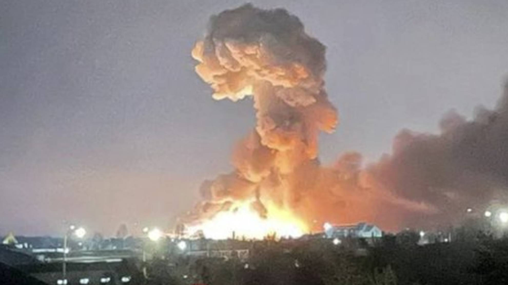

Crean un verdadero infierno
El Estado Mayor Conjunto ucraniano informó este sábado que hubo bombardeos rusos en el este y en Kharkiv, pero sin ofensiva terrestre, salvo un intento en Dolomitne, cerca de Bakhmut, en el este. Los servicios de emergencia ucranianos afirman que seis civiles resultaron heridos, y cuatro de ellos fueron hospitalizados en Kharkiv, la segunda ciudad más grande de Ucrania, después de que cayera un cohete en un edificio residencial.
El ministerio de Defensa de Ucrania difundió imágenes desde el espacio al denunciar “el feroz avance” de las tropas rusas en el país. “Así se ve desde el espacio el feroz avance de los criminales de guerra rusos por nuestras tierras. Y solo la valentía de nuestros guerreros y una coalición internacional de naciones libres pueden detener estas hordas de fuego que destruyen todo a su paso”, apuntó el ministerio de Defensa de Ucrania por Twitter.